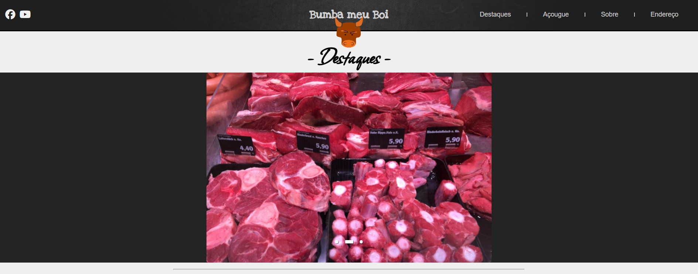

Açougue Bumba
Nesse projeto eu busquei implementar diversas funcionalidades com Javascript puro, como o carrossel principal e o catálogo de itens.
Destaques:
- Criação de um Carrossel funcional;
- Catálogo de ítens;

Nesse projeto eu busquei implementar diversas funcionalidades com Javascript puro, como o carrossel principal e o catálogo de itens.
Nesse projeto eu busquei implementar diversas funcionalidades com Javascript puro, como o carrossel principal e o catálogo de itens.
Nesse projeto eu busquei implementar diversas funcionalidades com Javascript puro, como o carrossel principal e o catálogo de itens.
Oi, tudo bom?
Sou um web-developer in development, apaixonado pelo assunto e estudando bastante!
Sobre mim, posso dizer que sou um cara focado 😄
Tenho conhecimentos intermediários em HTML e CSS e estou iniciando minha jornada na programaçaõ com Javascript! Também falo um pouco de inglês...
Estou cursando Análise e Desenvolvimento de Sistemas pelo Instituto Infnet. É minha primeira graduação 🤩